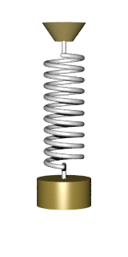
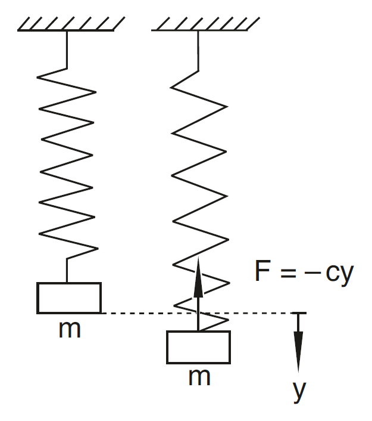
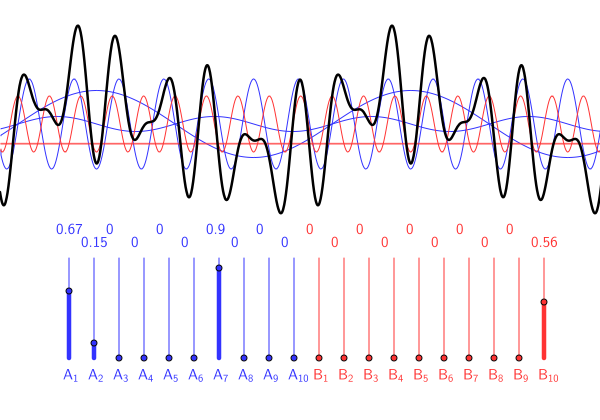

Modul 06 – Modalanalyse¶
Lernziele¶
In diesem Modul werden folgende Inhalte und Kompetenzen vermittelt:
- Bedeutung von Eigenfrequenzen und Eigenformen für Bauteile und Baugruppen
- Herleitung grundlegender Zusammenhänge aus einfachen Feder Masse Systemen
- Einfluss der Einspannung und der Massenverteilung auf das Eigenschwingungsverhalten
- Umsetzung einer Modalanalyse in ANSYS Mechanical
- Interpretation und Bewertung von Modenformen
- Übertragung auf komplexere Baugruppen mit starren und verformbaren Teilen
Motivation und zentrale Fragestellungen¶
Schwingungen treten in technischen Systemen in vielfältiger Form auf. Bereits einfache Beobachtungen zeigen, dass Strukturen nicht beliebig schwingen, sondern charakteristische, systemabhängige Muster ausbilden. Diese Muster entstehen nicht zufällig, sondern entsprechen dem Eigenschwingverhalten des jeweiligen Systems.
Die folgenden Filmsequenzen verdeutlichen typische Situationen, in denen sich dieses Eigenverhalten unmittelbar beobachten lässt. Die Beispiele reichen von alltäglichen Objekten bis hin zu technischen Bearbeitungsprozessen und dienen als Ausgangspunkt für die Analyse der zugrunde liegenden Mechanismen.
Schwingung einer Straßenlaterne¶
Was lässt sich in dieser Filmsequenz erkennen?
- Die Lampe führt eine freie Schwingung aus.
- Die Bewegung konzentriert sich in einer charakteristischen Form, die einer Eigenform des Systems entspricht.
- Dass die Laterne in dieser Form schwingt, liegt daran, dass der Wind Anregungsanteile enthält, die die Eigenfrequenz des Systems treffen.
Schwingung einer Tischplatte¶
Welche Phänomene treten hier auf?
- Die Tischplatte ist im Gestell offenbar sehr weich gelagert; bereits geringe Kräfte können zu einer Verdrehung des gesamten Aufbaus führen.
- Nach dem Loslassen führt die Platte eine freie Schwingung aus, was auf eine Kombination aus geringer Steifigkeit des Untergestells und relativ hoher Masse der Platte hinweist.
- Ein solcher Aufbau ist strukturdynamisch ungünstig: geringe Gestellsteifigkeit in Kombination mit großer Plattenmasse führt zu ausgeprägtem Eigenschwingverhalten.
Aeroelastische Instabilität der Tacoma-Narrows-Brücke¶
Welche strukturdynamischen Effekte sind sichtbar?
- Die Brücke zeigt ausgeprägte Torsionsschwingungen mit stark zunehmender Amplitude.
- Eigenfrequenzen und Eigenformen charakterisieren das schwingungsfähige Tragwerk und sind Grundlage seiner aeroelastischen Betrachtung.
- Beim aeroelastischen Flattern verändert die Bewegung des Brückendecks die Luftkräfte. Diese wirken auf die Bewegung zurück und können ihr mehr Energie zuführen, als durch Dämpfung verloren geht.
- Diese Selbsterregung ist von erzwungener Resonanz durch eine vorgegebene periodische äußere Kraft zu unterscheiden. Eine solche Erregerfrequenz muss hier nicht mit einer Eigenfrequenz übereinstimmen.
- Eine reine strukturelle Modalanalyse beschreibt Eigenformen und Eigenfrequenzen, genügt aber nicht zur Beurteilung der aeroelastischen Stabilität 1.
Vibrationen beim Fräsen¶
Welche Hinweise auf Eigenfrequenzen liefert diese Bearbeitung?
- Das Werkzeug beginnt zu schwingen, sobald die Schnittbedingungen eine dynamisch instabile Konfiguration erzeugen. Diese liegt vor, wenn die Rückkopplung zwischen Werkzeugbewegung und Spanbildungsprozess Schwingungen verstärkt statt dämpft.
- Die entstehende Rattermarke ist ein direktes Abbild der Werkzeugschwingung und zeigt die dominierende Eigenform des Systems.
- Das Gesamtsystem Werkzeug–Spindel–Werkstück weist eine oder mehrere charakteristische Eigenfrequenzen auf, in deren Nähe das Schwingungsverhalten besonders ausgeprägt ist.
- Dynamische Instabilität entsteht, wenn die Prozessanregung Anteile im Bereich einer Eigenfrequenz enthält und die Systemdämpfung nicht ausreicht, um die Schwingung zu reduzieren.
- In der Filmsequenz ist eine aktive Schwingungsreduzierung sichtbar. Deren Wirkung zeigt sich darin, dass die Schwingungsamplitude zeitweise deutlich reduziert wird, da der Dämpfer dem System aktiv Energie entzieht und somit das Eigenschwingverhalten beeinflusst.
Schwingungen eines Maschinenunterbaus¶
Welche strukturdynamischen Aspekte treten hier hervor?
- Das Video zeigt eine Zusammenfassung zahlreicher Eigenformen eines Maschinenunterbaus, wie sie in einer FEM-Modalanalyse berechnet werden.
- Die dargestellten Moden decken einen breiten Frequenzbereich ab und verdeutlichen, dass technische Systeme viele charakteristische Eigenformen besitzen, die sich lokal oder global ausprägen können.
- Die sichtbaren Schwingungsmuster werden durch die Verteilung von Masse und Steifigkeit bestimmt.
- Niedrigfrequente Eigenformen betreffen oft den gesamten Aufbau, während höherfrequente Moden lokal konzentrierte Verformungen aufweisen.
- Die Vielzahl möglicher Eigenformen erklärt, warum bereits geringe Anregungen – wie im vorherigen Video des Fräsprozesses – bestimmte Moden aktivieren und damit unerwünschte Schwingungen verursachen können.
Zwischenfazit¶
Die gezeigten Beispiele machen deutlich, dass technische Systeme nicht beliebig schwingen, sondern ausgeprägte Eigenformen besitzen, die in charakteristischen Frequenzbereichen auftreten.
Diese Beobachtungen führen zu grundlegenden Fragestellungen:
- Welche Eigenschaften eines Systems bestimmen sein Schwingungsverhalten?
- Warum treten Schwingungen nur in bestimmten Frequenzbereichen verstärkt auf?
- Welche physikalischen Parameter steuern Lage und Form der Eigenmoden?
- Wie prägen Eigenformen das Verhalten komplexer Bauteile und Baugruppen?
- Wie unterscheiden sich Einmassensysteme von kontinuierlichen Strukturen?
Zur systematischen Analyse dieser Fragestellungen wird schrittweise vom einfachen dynamischen Modell zum komplexen technischen Bauteil übergegangen. Der Einstieg erfolgt über den Einmassenschwinger, bevor Balken, Platten, Wellen und Baugruppen untersucht werden.
Theoretischer Hintergrund¶
Grundbegriffe¶
Technische Schwingungen lassen sich durch wenige grundlegende Größen beschreiben.


-
Auslenkung
Zeitabhängige Abweichung einer Größe (z. B. Lage) vom Gleichgewichtszustand. -
Periode \(T\)
Zeitspanne, nach der sich ein periodischer Vorgang wiederholt. -
Frequenz \(f\) und Kreisfrequenz \(\omega\)
\(f = \frac{1}{T}\)
\(\omega = 2 \pi f\) -
Amplitude \(A\)
Maximale Auslenkung aus dem Gleichgewicht.
Diese Größen bilden die Basis für die Beschreibung mechanischer Schwingungen.
Ungedämpfte Schwingung eines Einmassenschwingers¶
Ein großes Spektrum technischer Schwingungsprobleme lässt sich im Kern auf das lineare Feder–Masse–System zurückführen.


Die Auslenkung aus der Ruhelage wird durch \(y(t)\) beschrieben. Die rücktreibende Kraft ist proportional zur Auslenkung, jedoch entgegengesetzt gerichtet:
Die Größe \(c\) ist die Federkonstante (Einheit: N/m bzw. N/mm).
Kräfteansatz und Bewegungsgleichung¶
Nach dem zweiten Newtonschen Gesetz führt die resultierende Kraft zu einer Beschleunigung:
Gleichsetzen beider Ausdrücke ergibt:
oder in Standardform:
Hierbei handelt es sich um lineare, homogene Differentialgleichung zweiter Ordnung mit konstanten Koeffizienten.
Harmonischer Lösungsansatz¶
Eine Lösung der Form
wird eingesetzt. Die Ableitungen lauten:
Einsetzen in die Bewegungsgleichung führt auf:
Daraus folgt die charakteristische Beziehung:
Dies ist die Eigenkreisfrequenz des Systems.
Eigenfrequenz und Schwingungsdauer¶
Aus der Kreisfrequenz ergibt sich die Eigenfrequenz:
Die dazugehörige Periodendauer lautet:
Die Schwingung ist also eine Systemeigenschaft, bestimmt ausschließlich durch Masse und Federkonstante. Die Anfangsbedingungen beeinflussen lediglich Amplitude \(\hat{y}\) und Phase \(\varphi_0\).
Darstellung der Schwingung im Zeit- und Frequenzbereich¶
Die Eigenschaften der Lösung des Einmassenschwingers lassen sich anschaulich sowohl im Zeitbereich als auch im Frequenzbereich darstellen. Im Zeitbereich werden Auslenkung \(y(t)\), Amplitude \(\hat{y}\), Periodendauer \(T_0\) und Startphase \(\varphi_0\) sichtbar. Im Frequenzbereich zeigt sich idealisiert nur eine Frequenzkomponente bei der Eigenfrequenz \(f_0\) bzw. \(\omega_0\).
Zeitbereich: Harmonische Schwingung mit markierten Kenngrößen
 Bildquelle4
Bildquelle4
Diese Darstellung zeigt, wie Amplitude, Periodendauer und Startphase die Form der Zeitfunktion bestimmen.
Frequenzbereich: Darstellung der Eigenfrequenz
 Bildquelle5
Bildquelle5
Das zugehörige Spektrum zeigt idealerweise nur eine einzige Frequenzkomponente bei der Eigenfrequenz.
Gedämpfte Schwingung¶
Reale technische Systeme verlieren Schwingungsenergie durch Reibung, Luftwiderstand oder Materialdämpfung. Bei viskoser Dämpfung ist die Dämpfungskraft proportional zur Geschwindigkeit:
Dabei sind \(m\) die Masse in \(\mathrm{kg}\), \(d\) die Dämpfungskonstante in \(\mathrm{N\,s/m}\) und \(c\) die Federsteifigkeit in \(\mathrm{N/m}\). Wie zuvor gilt \(\omega_0=\sqrt{c/m}\).
Es werden folgende Fälle unterschieden:
- unterkritische Dämpfung (abklingende Schwingung)
- kritische Dämpfung (Grenzfall, schnellster Abklingvorgang ohne Schwingung)
- überkritische Dämpfung (keine periodische Bewegung)
Für den unterkritisch gedämpften Fall \(0<d<2\sqrt{mc}\) lautet die gedämpfte Eigenkreisfrequenz:

Die Achsen zeigen die Auslenkung \(y\) über der Zeit \(t\).
Bildquelle3
Erzwungene Schwingung und Resonanz¶
Wirkt auf das System eine zeitabhängige äußere Kraft
so klingt bei vorhandener viskoser Dämpfung der freie Schwingungsanteil ab. Nach dem Einschwingvorgang bleibt eine stationäre Schwingung mit der Anregungsfrequenz \(\omega\). Bei konstanter Kraftamplitude \(F_0\) hängt ihre Amplitude von der Anregungsfrequenz und der Dämpfung ab. Bei schwacher Dämpfung liegt das Amplitudenmaximum nahe der ungedämpften Eigenkreisfrequenz \(\omega_0\). Diese Amplitudenüberhöhung wird als Resonanz bezeichnet. Ohne Dämpfung wächst die Amplitude bei \(\omega=\omega_0\) im idealisierten Modell unbegrenzt; ein endlicher stationärer Zustand stellt sich dann nicht ein 6.
Die Grafik zeigt als Beispiel die Unwuchtantwort eines idealisierten Rotors. Dabei sind \(n\) die Drehzahl, \(n_\mathrm{k}\) die kritische Drehzahl, \(X\) die Auslenkungsamplitude und \(e\) die Massenexzentrizität. Die Kurve gilt für ein ungedämpftes Einmassenmodell: Bei \(n=n_\mathrm{k}\) existiert keine endliche stationäre Amplitude. Der schraffierte Bereich ist schematisch gewählt und legt keine allgemeinen Grenzdrehzahlen fest 7.

Überlagerung und Schwebung¶
Ein technisches System kann mehrere Schwingungsanteile gleichzeitig enthalten. Die Überlagerung zweier harmonischer Schwingungen mit leicht unterschiedlicher Frequenz führt zur Schwebung, einem alternierenden Verstärken und Abschwächen der Gesamtamplitude.
Die Überlagerung zweier Schwingungen lässt sich schreiben als:
Die Schwebungsfrequenz ergibt sich zu:
Dieses Konzept bildet somit den Übergang zur Vorstellung einer Vielzahl von Eigenformen in realen Strukturen.


Von der eindimensionalen Schwingung zur Modalanalyse¶
Eigenschwingungen treten nicht nur in eindimensionalen Systemen auf, sondern überall dort, wo Kontinua wie Luftsäulen, Saiten, Balken, Membranen oder Platten Schwingungen ausbilden. Diese Beispiele machen deutlich:
- reale Strukturen besitzen eine Vielzahl von Eigenfrequenzen
- zu jeder Eigenfrequenz gehört eine charakteristische Eigenform
- nur bestimmte Frequenzen sind mit der Geometrie und den Randbedingungen vereinbar und führen zu ausgeprägtem Schwingungsverhalten
Diese Grundprinzipien lassen sich auf diskretisierte technische Strukturen übertragen. Für ein lineares System mit konstanten Massen-, Dämpfungs- und Steifigkeitsmatrizen gilt:
Dabei sind \(u(t)\) der Verschiebungsvektor, \(p(t)\) der äußere Lastvektor sowie \(M\), \(C\) und \(K\) die Massen-, Dämpfungs- und Steifigkeitsmatrix. Für freie, ungedämpfte Schwingungen werden \(p(t)=0\) und \(C=0\) gesetzt. Mit \(u(t)=\Phi\,\mathrm{e}^{\mathrm{i}\omega t}\) folgt:
Die Eigenwerte \(\omega_i^2\) liefern die Eigenkreisfrequenzen; \(f_i=\omega_i/(2\pi)\) sind die Eigenfrequenzen in Hz. Die Eigenvektoren \(\Phi_i\) beschreiben die Eigenformen. Diese ungedämpfte Modalanalyse bestimmt keine Dämpfungsgrade 8.
Modellstufen¶
Die Modellwahl richtet sich nach der gesuchten Bewegung: Ein starrer Körper bildet globale Bewegungen ab, ein Mehrmassensystem relative Bewegungen diskreter Massen. Kontinuierliche Balken oder Platten besitzen räumlich verteilte Verformungen. Das FE-Modell nähert diese durch endlich viele Knotenfreiheitsgrade an. Mehr Freiheitsgrade allein garantieren dabei kein besseres Modell; Material, Lagerung und Verbindungen müssen zur Fragestellung passen.

Zur Vertiefung
Beitelschmidt/Dresig, Maschinendynamik, Kapitel „Modellbildung und Kennwertermittlung“ sowie „Lineare Systeme mit mehreren Freiheitsgraden: Modellbildung und freie Schwingungen“ 9.
Aufgabenstellung Balken¶
Verwenden Sie biegebalken.stp. Der Balken besitzt einen rechteckigen Querschnitt mit \(b=8\,\mathrm{mm}\), \(h=12\,\mathrm{mm}\) und eine Länge von \(L=100\,\mathrm{mm}\). Prüfen Sie die importierten Abmessungen.
Legen Sie ein neues Material mit dem Namen Aluminium_Modal an. Verwenden Sie \(\rho=2{,}7\,\mathrm{kg/dm^3}\), \(E=70\,\mathrm{GPa}\) und \(\nu=0{,}35\). Das eigenständige Definieren der Materialkennwerte ist Teil dieser Aufgabe.
- Berechnen Sie jeweils die ersten zehn Eigenformen für den beidseitig freien, den einseitig fest eingespannten und den beidseitig fest eingespannten Balken.
- Ordnen Sie Starrkörper- und elastische Moden zu. Vergleichen Sie entsprechende Eigenformen und diskutieren Sie den Einfluss der Einspannung.
- Ändern Sie beim beidseitig eingespannten Balken das Material in Baustahl und vergleichen Sie die Ergebnisse.
Analytische Lösungen einfacher Strukturen¶
Für einen einfachen Balken lassen sich Biegeeigenfrequenzen auch ohne FE-Modell abschätzen. Dazu wird der Balken als schlank und gleichförmig betrachtet: Er biegt sich, zusätzliche Verformungen durch Schub werden vernachlässigt. Dieses vereinfachte Modell heißt Euler-Bernoulli-Balken. Die folgende Formel gilt für einen einseitig fest eingespannten Balken mit kleinen Verformungen; auch die Rotationsträgheit wird vernachlässigt 10.
Hierbei sind \(L\) die freie Länge, \(E\) der Elastizitätsmodul, \(I\) das Flächenträgheitsmoment für die betrachtete Biegerichtung, \(\rho\) die Dichte und \(A\) die Querschnittsfläche. Mit \(E\) in Pa, \(I\) in m⁴, \(\rho\) in kg/m³, \(A\) in m² und \(L\) in m ergibt sich \(f_n\) in Hz.
Beim Rechteckquerschnitt wird für die beiden Biegerichtungen jeweils das passende Flächenträgheitsmoment eingesetzt. Verglichen werden entsprechende Biegemoden, nicht ungeprüft die erste und zweite Zeile der FE-Ergebnisliste. Torsions- und Längsmoden sind in dieser Formel nicht enthalten. Bei kurzen Balken und höheren Moden können die Balkenannahmen merklich von einem 3D-Modell abweichen.
Welche Zahlenwerte gelten?
Die Werte 1,875 und 4,694 gehören zur ersten und zweiten Biegemode des einseitig eingespannten, gleichförmigen Balkens in diesem Modell. Sie gelten nicht nur für eine bestimmte Balkenlänge oder einen bestimmten Rechteckquerschnitt: Länge, Querschnitt und Material werden separat in der Formel berücksichtigt. Für andere Lagerungen gelten andere Zahlenwerte 10.
Umsetzung in ANSYS – Balken¶
Die Anleitung erläutert die Modellierung und Auswertung am Balken. Die Lagerungs- und Materialvarianten untersuchen Sie gemäß Aufgabenstellung.
1. Projektverwaltung und Geometrieimport¶
Wählen Sie in Workbench das Analysesystem Modal und importieren Sie die Balkengeometrie. Für diesen Einstieg genügt eine eigenständige Modalanalyse. Eine Kopplung mit Statisch strukturell dient weiterführend dazu, einen vorgespannten Zustand zu berücksichtigen.

2. Material und Netz¶
-
Öffnen Sie in Workbench die Technischen Daten. Klicken Sie unten in der Materialübersicht auf die Zeile Hier klicken, um ein neues Material hinzuzufügen. Geben Sie dort den Namen Aluminium_Modal ein, um das neue Material anzulegen.
-
Ergänzen Sie aus der Toolbox die Eigenschaften Dichte und Isotrope Elastizität. Tragen Sie die folgenden Werte ein und prüfen Sie die Einheiten:
Eigenschaft Wert Dichte \(2{,}7\,\mathrm{kg/dm^3}=2.700\,\mathrm{kg/m^3}\) Elastizitätsmodul \(70\,\mathrm{GPa}=70.000\,\mathrm{MPa}\) Querkontraktionszahl \(0{,}35\) -
Wechseln Sie zurück zum Modell in Mechanical und weisen Sie dem Balken Aluminium_Modal zu.

Die in Materialzuweisung gezeigte Datenbanklegierung besitzt \(\nu=0{,}33\). Für diese Aufgabe gelten die hier vorgegebenen Werte des selbst angelegten Materials.

Die Vernetzung erfolgt nach dem bekannten Vorgehen.
3. Randbedingungen¶
Beginnen Sie mit der freien Analyse ohne Lagerungen. Für die einseitig eingespannte Variante fixieren Sie anschließend eine Stirnfläche; die andere bleibt frei. Im beidseitig eingespannten Fall ändern Sie die Lagerung entsprechend der Aufgabenstellung.
4. Analyseeinstellungen¶
Stellen Sie die Berechnung der ersten zehn Moden ein. Der Suchbereich wird für diesen Einstieg nicht eingeschränkt. Die Standardanalyse ist ungedämpft; sie bestimmt keine Dämpfungsgrade. Die benötigte Modenanzahl ist bei anderen Fragestellungen gesondert festzulegen.

Freie Modelle und Starrkörpermoden
Ein freier, zusammenhängender 3D-Körper besitzt drei translatorische und drei rotatorische Starrkörpermoden. Ihre Eigenfrequenzen liegen theoretisch bei null; numerisch können kleine Abweichungen auftreten. Sie gehören zum freien Modell. Zusätzliche Lagerungen würden die untersuchte Fragestellung ändern 11.
5. Eigenformen auswerten¶
Nach der Lösung werden die Eigenfrequenzen in der Ergebnistabelle betrachtet. Markieren Sie die gewünschten Einträge und erzeugen Sie die zugehörigen Eigenformergebnisse über das Kontextmenü. Prüfen Sie die Formen einzeln und mit der Animation.

- Eigenfrequenz: Bei welcher Frequenz kann diese freie Eigenschwingung auftreten?
- Eigenform: Wie bewegen sich die Bereiche relativ zueinander? Liegt beispielsweise eine Biege-, Torsions- oder Starrkörperbewegung vor?
- Skalierung: Die dargestellte Form ist normiert und zur Visualisierung skaliert. Der absolute Zahlenwert einer Verformungslegende ist keine Betriebsauslenkung. Die relative räumliche Verteilung ist dagegen aussagekräftig.
Keine Betriebsauslenkung aus der Modalanalyse
Eine angezeigte Verformung in mm oder m darf nicht als reale Schwingungsamplitude interpretiert werden. Das gilt auch für aus der Eigenform abgeleitete Dehnungs- und Spannungswerte: Aussagekräftig ist ihre relative Verteilung, nicht ihr absolutes Niveau. Die Animation veranschaulicht die Eigenform und stellt keinen berechneten Betriebszeitverlauf dar.

Welche Amplitude sich unter einer konkreten harmonischen Last einstellt, ist eine gesonderte Frage der Frequenzantwort. Dafür werden auch die Lastverteilung, Anregungsfrequenz und Dämpfung benötigt.
6. Zusammenfassung der Partizipationsfaktoren¶
Wählen Sie in den Lösungsinformationen die Ausgabe Zusammenfassung der Partizipationsfaktoren. Dort lassen sich unter anderem Beteiligungsfaktoren, effektive Massen und Massenanteile anzeigen.

Beteiligungsfaktor und effektive modale Masse
Diese Größen helfen, Moden hinsichtlich einer definierten Anregungsrichtung einzuordnen. Bei einer gleichgerichteten Bewegung der Lagerung zeigen sie beispielsweise, welche Moden für die dadurch erzeugte Trägheitsanregung wesentlich sind.
| Größe | Praktische Aussage |
|---|---|
| Beteiligungsfaktor | Kopplung einer Mode an die betrachtete translatorische oder rotatorische Richtung |
| Effektive modale Masse | Richtungsbezogene Gewichtung dieser Beteiligung; keine räumlich abgetrennte Bauteilmasse |
| Summe der effektiven Massenanteile an der Gesamtmasse | Hinweis darauf, wie viel dieser richtungsbezogenen Beteiligung durch die berücksichtigten Moden erfasst wird |
Richtungsvergleich: Vergleichen Sie zwei Anregungsrichtungen und ordnen Sie auffällige Werte den Eigenformen zu.
Eine lokale Kraft hat eine eigene räumliche Lastverteilung. Ihre modale Anregung ergibt sich aus der Projektion auf die Eigenform, \(Q_i=\Phi_i^T p\). Deshalb kann auch eine Mode mit geringer effektiver Masse bei passender lokaler Krafteinleitung relevant sein.
ANSYS unterscheidet den kumulierten effektiven Massenanteil, der auf die berechneten Moden bezogen ist, vom Verhältnis der effektiven Masse zur Gesamtmasse. Ersterer erreicht am Ende der betrachteten Modenliste 1; daraus folgt keine vollständige Erfassung der Gesamtmasse. Ein pauschales „90 % erreicht, also ausreichend“ ersetzt weder die Prüfung der Anregung und des Frequenzbereichs noch die Konvergenz der interessierenden Antwortgröße 1213.
Weitere Varianten¶
Bearbeiten Sie die übrigen Lagerungs- und Materialvarianten der Aufgabenstellung. Vergleichen Sie entsprechende Eigenformen; die Modennummer allein genügt nicht zur Zuordnung.
Aufgabenstellung Stahlplatte¶
Verwenden Sie stahlplatte.stp. Prüfen Sie die Abmessungen: Länge 680 mm, Breite 100 mm, Dicke 3 mm. Der Werkstoff sei Baustahl.
- Untersuchen Sie die Platte ohne Einspannung und ordnen Sie die Starrkörpermoden ein.
- Spannen Sie die linke Stirnfläche fest ein und bestimmen Sie die ersten fünf Eigenfrequenzen und Eigenformen.
- Spannen Sie beide Stirnflächen fest ein und bestimmen Sie ebenfalls die ersten fünf Eigenfrequenzen und Eigenformen. Vergleichen Sie die Formen mit dem einseitig eingespannten Fall.
Aufgabenstellung Getriebewelle¶
Verwenden Sie getriebewelle.stp und das selbst definierte Material Aluminium_Modal mit \(\rho=2{,}7\,\mathrm{kg/dm^3}\), \(E=70\,\mathrm{GPa}\) und \(\nu=0{,}35\).
- Berechnen Sie die ersten zehn Eigenfrequenzen. Realisieren Sie die Einspannung durch fixierte Lagerungen an beiden Enden.
- Diskutieren Sie, welche Eigenformen und Eigenfrequenzen für den Betrieb einer Maschine relevant sein könnten. Welche Informationen zur Anregung fehlen für eine abschließende Bewertung?
- Fügen Sie eine Punktmasse von 10 kg mittig am größten Durchmesser der Welle hinzu. Wie verändern sich die Eigenfrequenzen und Eigenformen?
Punktmasse ergänzen¶
Fügen Sie in Mechanical unter Geometrie eine Punktmasse ein. Legen Sie ihre Position mittig am größten Durchmesser der Welle fest, wählen Sie den Anbindungsbereich aus und tragen Sie die Masse von 10 kg ein.
Das Verhalten Starr beziehungsweise Verformbar beschreibt die Kopplung an die ausgewählte Geometrie:
- Starr: Die angebundenen Geometriebereiche bewegen sich gemeinsam wie ein starrer Körper. Ihre relative Verformung wird unterdrückt. Dadurch kann die Kopplung die Welle im Anbindungsbereich zusätzlich versteifen.
- Verformbar: Die angebundene Geometrie darf sich weiterhin verformen. Die Masse wird angekoppelt, ohne den ausgewählten Bereich starr zu setzen.
In der Praxis ersetzt eine Punktmasse häufig ein Bauteil, dessen Geometrie nicht vollständig modelliert werden soll. Ist dieses Bauteil gegenüber der Welle sehr steif und verbindet es den Anbindungsbereich annähernd starr, ist die starre Kopplung eine passende Vereinfachung. Soll dagegen hauptsächlich eine zusätzliche Masse ohne entsprechende Versteifung berücksichtigt werden, ist die verformbare Kopplung geeignet 14.

Aufgabenstellung Windenergieanlage¶
Importieren Sie windrad.stp. Die Baugruppe besteht aus Rotoreinheit, Gondel, Turm und Bodenplatte. Gesucht sind insbesondere die Turmeigenfrequenzen. Gondel und Rotoreinheit werden zur Vereinfachung in beiden Varianten als Starrkörper behandelt.
- Weisen Sie allen Bauteilen Baustahl zu und berechnen Sie die ersten sechs Eigenfrequenzen. Ordnen Sie die Eigenformen zu.
- Ändern Sie den Turmwerkstoff in Aluminium und den Rotorwerkstoff in Kunststoff. Welchen Einfluss hat die Materialwahl auf die Turmeigenfrequenzen?
Die Bodenlagerung und die Kunststoffdefinition sind bewusst selbst zu wählen und zu begründen. Dokumentieren Sie die verwendeten Materialkennwerte, Kontakte und Kopplungen. Auch Starrkörper benötigen die zutreffende Masse und Massenträgheit; ihre Materialänderung kann deshalb die Turmeigenfrequenzen beeinflussen.
Starrkörper und Verbindungen¶
Gondel und Rotor werden als Starrkörper modelliert. Sie können sich bewegen und drehen, verformen sich aber nicht. Ihre Masse und Massenträgheit werden bei der Berechnung weiterhin berücksichtigt.

Fest miteinander verbundene Bauteile können mit dem Kontakttyp Verbund modelliert werden. Eine Übersicht der Kontaktarten finden Sie im Abschnitt Kontakte.
Die Kontakte finden Sie im Strukturbaum unter Verbindungen → Kontakte. Wählen Sie einen Kontaktbereich aus, um die zugehörigen Flächen und Einstellungen anzuzeigen, wie in der folgenden Abbildung dargestellt.

Automatische Kontakterkennung
Prüfen Sie die automatisch erzeugten Kontakte sowie die Verbindung der Starrkörper mit dem Turm. Übernehmen Sie die erkannten Verbindungen nicht ungeprüft.
Diskussion der Ergebnisse¶
- Wie verändern Masseverteilung, Steifigkeit und Randbedingungen die entsprechenden Eigenfrequenzen und Eigenformen?
- Sind Starrkörpermoden, lokale Moden und globale Biege- oder Torsionsmoden richtig zugeordnet?
- Wie empfindlich sind die Ergebnisse gegenüber idealisierten Lagerungen, Materialkennwerten und Verbindungssteifigkeiten?
- Welche Anregungsfrequenzen und Lastverteilungen müssten bekannt sein, um die Betriebsrelevanz zu beurteilen?
- Welche Aussagen erlaubt die Modalanalyse, und welche erfordern eine Lastantwort oder einen Vergleich mit Messungen?
Weiterführendes¶
Experimentelle Modalanalyse¶
Die experimentelle Modalanalyse bestimmt Eigenfrequenzen, modale Dämpfungsgrade und Eigenformen aus gemessenen Eingangs- und Ausgangssignalen. Ein instrumentierter Impulshammer oder ein Shaker regt die Struktur an. Die Kraft wird gemessen, die Antwort beispielsweise mit Beschleunigungssensoren an definierten Orten und in definierten Richtungen erfasst 15.

Aus den Messsignalen werden komplexe Frequenzgangfunktionen (FRFs) geschätzt. Wird die Beschleunigung auf die eingeleitete Kraft bezogen, hat die FRF die Einheit \((\mathrm{m/s^2})/\mathrm{N}\). Die FRF enthält Betrag und Phase; bei verrauschten Messungen werden geeignete Spektralschätzer verwendet, statt die Zeitverläufe einfach zu dividieren 1516.
Für die räumliche Zuordnung gibt es zwei einfache Messabläufe: Beim Roving Hammer bleibt der Sensor an einem Referenzpunkt, während an verschiedenen Punkten angeschlagen wird. Beim Roving Sensor bleibt der Anregungspunkt fest und der Sensor wird versetzt. Position und Richtung jeder Messung werden dokumentiert; aus den zusammengehörigen FRFs wird die Eigenform bestimmt 17.

Resonanzspitzen geben erste Hinweise auf Moden. Eine einzelne Spitze liefert aber keine vollständige Eigenform. Dafür sind räumlich verteilte Messungen erforderlich. Liegt der Anregungs- oder Messpunkt auf einem Schwingungsknoten, kann eine Mode kaum sichtbar sein. Dämpfung und benachbarte Moden erfordern eine geeignete Parameteridentifikation; moderne Verfahren passen hierzu ein modales Modell an die FRFs an 1516.
Die Messqualität ist unter anderem hinsichtlich Frequenzauflösung, Anregungsbandbreite, Mehrfachschlägen, Fensterung und Kohärenz zu prüfen. Eine hohe Kohärenz allein ist noch kein vollständiger Qualitätsnachweis 17.
Beim Vergleich mit dem FE-Modell sind Mess- und Modellrandbedingungen abzugleichen. Abweichungen können durch Lagerung, Verbindungen, Materialdaten sowie zusätzliche Sensormassen entstehen. Ein solcher Vergleich prüft das Modell; ohne Messdaten liegt keine experimentelle Validierung vor. Die ungedämpfte FE-Modalanalyse liefert zudem keine gemessenen Dämpfungsgrade.
Übergang zur Frequenzantwort¶
Die Modalanalyse beantwortet: Welche Eigenformen und Eigenfrequenzen besitzt die Struktur? Die harmonische Analyse ergänzt: Wie groß sind Amplitude und Phase unter einer vorgegebenen harmonischen Last? Für eine komplexe Lastamplitude \(\hat p\) gilt:
Dies folgt aus dem Ansatz \(u(t)=\operatorname{Re}(\hat u\,\mathrm{e}^{\mathrm{i}\omega t})\) in der allgemeinen Bewegungsgleichung. Eine Modenüberlagerung nutzt die zuvor bestimmten Eigenformen als reduzierte Basis; die berücksichtigten Moden müssen für Last, Frequenzbereich und Antwortgröße geeignet sein 18.
Quiz zur Selbstkontrolle¶
Welche Aussage erlaubt der Maximalwert einer skalierten Eigenform?
Wie viele Starrkörpermoden besitzt ein freier, zusammenhängender 3D-Körper?
Was folgt aus einem hohen effektiven Massenanteil in einer Richtung?
Welche zusätzliche Information benötigt eine harmonische Lastantwort?
Welche Größen bestimmen die Eigenfrequenzen einer linearen, ungedämpften FE-Modalanalyse?
Wie lassen sich Eigenformen verschiedener Material- oder Lagerungsvarianten sinnvoll vergleichen?
Was unterscheidet die starre von der verformbaren Kopplung einer Punktmasse an die Welle?
Warum kann eine Materialänderung an einem als Starrkörper modellierten Rotor die Eigenfrequenzen der Windenergieanlage beeinflussen?
Welche Aussage zur ungedämpften Modalanalyse ist richtig?
Was wird bei der experimentellen Modalanalyse benötigt, um eine räumliche Eigenform zu bestimmen?
-
Washington State Department of Transportation. Tacoma narrows bridge history: lessons from failure. URL: https://www.wsdot.wa.gov/TNBhistory/bridges-failure.htm (visited on 2026-11-18). ↩
-
Simple harmonic motion. 2025. URL: https://en.wikipedia.org/w/index.php?title=Simple_harmonic_motion&oldid=1326663175 (visited on 11.12.2025). ↩
-
Jürgen Eichler and Andreas Modler. Physik für das Ingenieurstudium. Springer Fachmedien Wiesbaden, Wiesbaden, 2023. ISBN 978-3-658-38833-1. doi:10.1007/978-3-658-38834-8. ↩↩
-
Kit - fakultät für mathematik - der modellansatz: modell239 - oszillationen. 11.12.2025. URL: https://wwwalt.math.kit.edu/ianm4/seite/ma-oszillationen/de (visited on 11.12.2025). ↩
-
8.7 mehrfache überlagerung von schwingungen | physik libre. 06.07.2025. URL: https://physikbuch.schule/complex-superposition.html (visited on 11.12.2025). ↩↩
-
BingKan Xue. Damped and driven harmonic oscillator. University of Florida, Computational Methods for Physics. URL: https://cmp.phys.ufl.edu/files/damped-driven-oscillator.html (visited on 18.11.2026). ↩
-
NPTEL. Rotor dynamics: simple rotor systems, critical speed and unbalance response. URL: https://archive.nptel.ac.in/content/storage2/courses/112103024/module2/lec1/4.html (visited on 2026-11-18). ↩
-
Ansys, Inc. Modal analysis: theory reference. URL: https://ansyshelp.ansys.com/public/Views/Secured/corp/v251/en/ans_thry/thy_anproc3.html (visited on 2026-11-18). ↩
-
Michael Beitelschmidt and Hans Dresig. Maschinendynamik. Springer Berlin Heidelberg, Berlin, Heidelberg, 2024. ISBN 978-3-662-60312-3. doi:10.1007/978-3-662-60313-0. ↩
-
Graz University of Technology. Cantilever beam: microelectronics and micromechanics. URL: https://lampz.tugraz.at/~hadley/memm/mechanics/cbeam.php (visited on 2026-11-18). ↩↩
-
Ansys, Inc. Free-free modal and pre-stressed modal analysis: lesson 5. URL: https://innovationspace.ansys.com/courses/courses/modal-analysis/lessons/free-free-modal-and-pre-stressed-modal-analysis-lesson-5/ (visited on 2026-11-18). ↩
-
Ansys, Inc. Mode participation factor and effective mass: lesson 4. URL: https://innovationspace.ansys.com/courses/courses/modal-analysis/lessons/mode-participation-factor-and-effective-mass-lesson-4/ (visited on 2026-11-18). ↩
-
Ansys, Inc. Spectrum analysis: effective mass and cumulative mass fraction. URL: https://ansyshelp.ansys.com/public/Views/Secured/corp/v251/en/ans_thry/thy_anproc7.html (visited on 2026-11-18). ↩
-
Ansys, Inc. Connecting bolts represented as beam elements: remote points – behavior. URL: https://innovationspace.ansys.com/courses/wp-content/uploads/sites/5/2020/09/Connecting-Bolts-Represented-as-Beam-Elements.pdf (visited on 2026-11-18). ↩
-
Brüel & Kjær. How to determine the modal parameters of simple structures: application note bo 0177. URL: https://www.bksv.com/media/doc/BO0177.pdf (visited on 2026-11-18). ↩↩↩
-
Structural Vibration Solutions. Artemis modal: purpose and methods. URL: https://www.svibs.com/resources/ARTeMIS_Modal_Help/About%20the%20Application.html (visited on 2026-11-18). ↩↩
-
Vibration Research. Experimental modal testing in obserview: recording and analysis. URL: https://vibrationresearch.com/blog/experimental-modal-testing-obserview/ (visited on 2026-11-18). ↩↩
-
Ansys, Inc. Harmonic analysis: theory reference. URL: https://ansyshelp.ansys.com/public/Views/Secured/corp/v251/en/ans_thry/thy_anproc4.html (visited on 2026-11-18). ↩